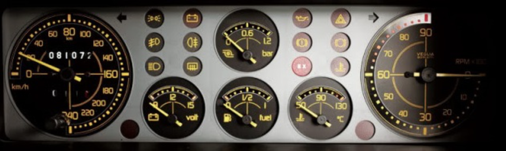
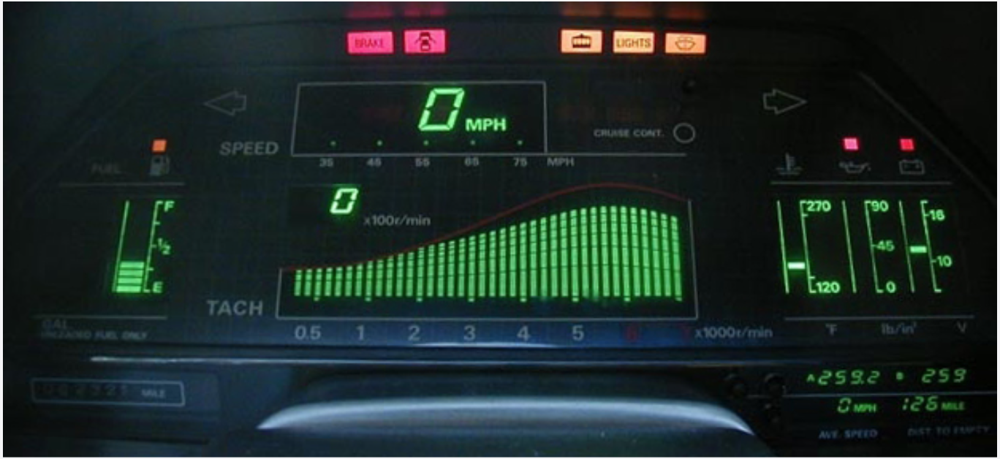
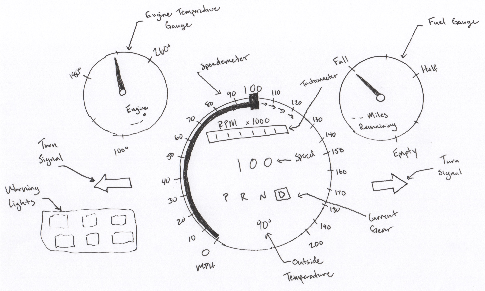
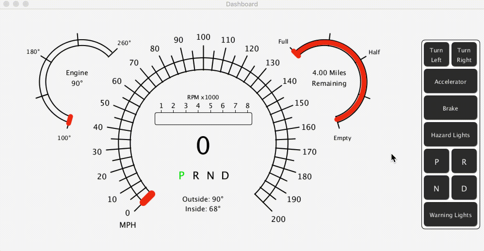
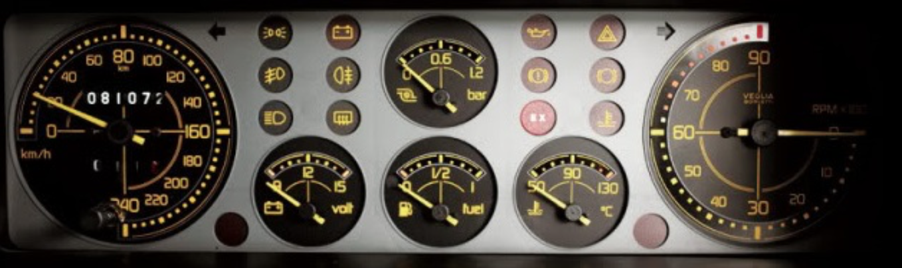
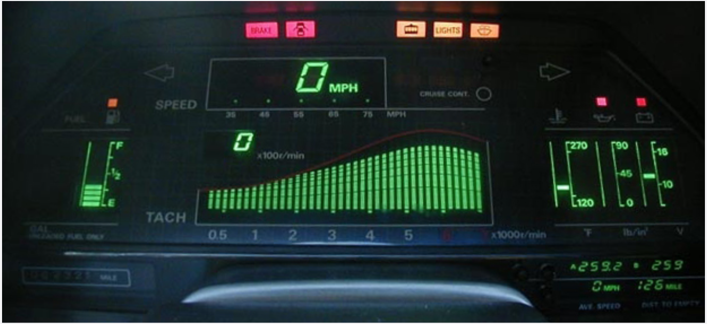
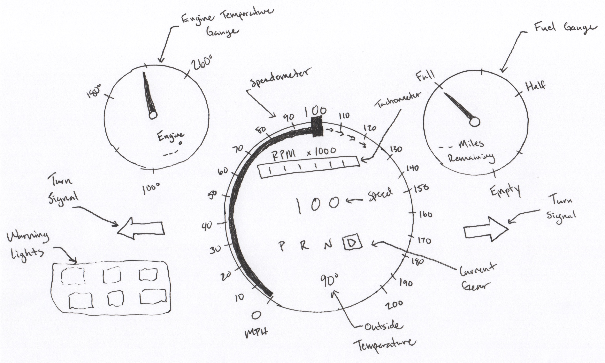
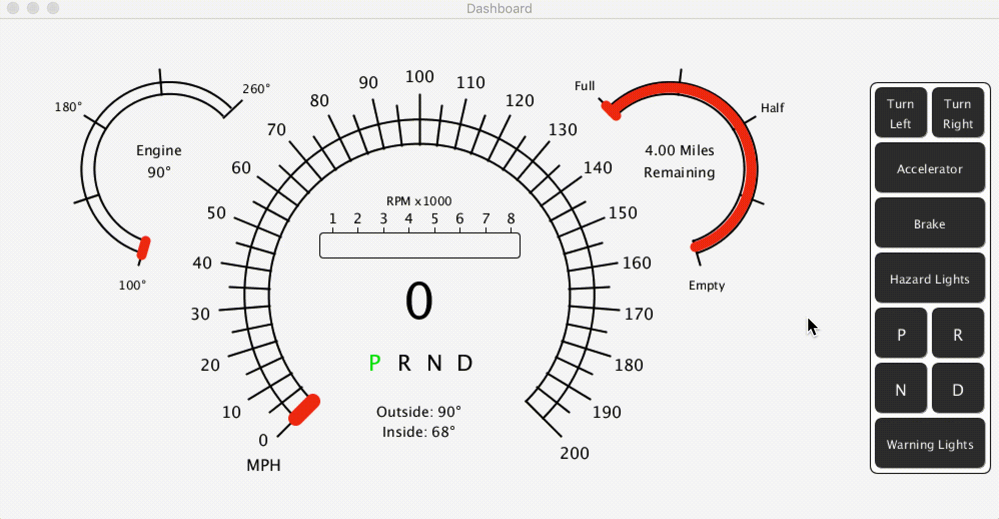

Pros:
Important information such as speedometer and tachometer is clearly displayed.
Cons:
Gauges rotate different directions.
Warning symbols are small.
Pros:
Layout of the gauges is not cluttered.
Fuel gauge shows the number of gallons in the tank.
Cons:
Scale for the speedometer makes exact readings difficult.
Oil pressure gauge makes reading the tachometer more difficult.
Pros:
Displays current gear.
Speedometer and tachometer can be clearly read.
Warning symbols light up.
Cons:
Fuel gauge rotates in different direction than other gauges.
All of the gauges use a rotating needle.
Pros:
Lots of information shown.
Cons:
Confusing which is speedometer and tachometer.
Warning symbols use a lot of space.
Speedometer and tachometer rotate in different directions.
Doesn’t display current gear.
Pros:
Clearly shows speed.
Information is labeled.
Orientation matches the scales of oil pressure, engine time, etc..
Warning symbols light up.
Cons:
Tachometer not intuitive to read.
Lights above the fuel, engine time, etc. are unclear.
Labels for information are not labeled which would make it difficult to see when dark.
There are two spots where speed is shown.
Doesn’t display current gear.
Speedometer
Tachometer
Odometer
Current Gear
Fuel Gauge
Engine Temperature Gauge
Oil Pressure Gauge
Turn Signal Indicators
Warning Lights
Battery Voltage Gauge
Trip Odometer
Navigation
Tire Pressure
Radio/Music Display
G-Force Meter
Accelerator
Brake
Gear Shifter
Turn Signal
Hazard Lights
Among the current designs, some common mistakes that could be made by the users include incorrectly reading the speed. There is a much less chance of misreading the speed on the Nissan Z31 300ZX example because the dashboard includes a digital display of the speed. However, among the other examples the speed is much less clear. Especially in the case where the scale on the speedometer goes very high and there is less space between numbers as seen on the BMW E36 M3 and Aston Martin DB9. Another common mistake that could be made is misreading a gauge because of the rotational direction of the dial in relation to the other gauges on the dashboard. This is seen on the tachometer of the Lancia Delta Integrale and the fuel gauge of the Chevy Colorado.
To improve the car dashboard, the most important information should be the first thing the eyes of the driver are drawn to. Therefore, the speedometer should be of main focus. With the speedometer in the center of the dashboard, the eyes of the driver will focus on the speed first. In the improved sketch the tachometer is also placed in the middle of the dashboard and clearly displays the engine RPM, but it does not use as much space as the examples above. Other important information should also be displayed on gauges such as engine temperature an the vehicles fuel level. The driver also needs to be informed of what gear the vehicle is in, so this information should also be displayed on the dashboard. The improved sketch takes design aspects of the Nissan Z31 300ZX that digitally displays the driver speed, while also showing the speed on the gauge so the driver can compare the current speed with the maximum speed of the vehicle. Unlike the gauges of the Aston Martin DB9, Chevy Colorado, and Lancia Delta Integrale, all of the guages in the proposed improved design intuitively rotate in the same direction to avoid confusion.
 






